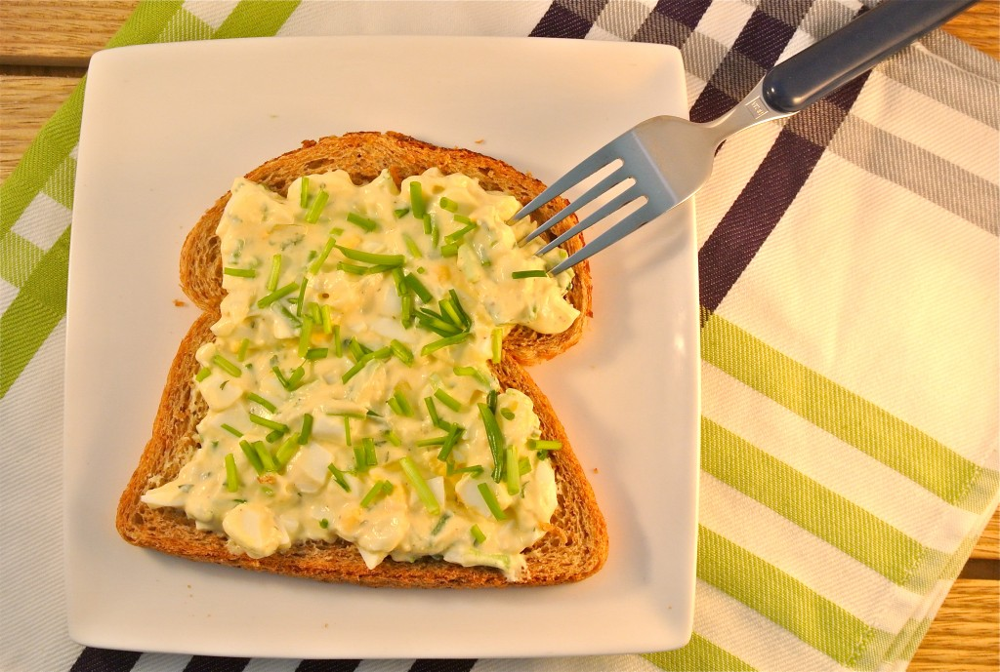

benodigdheden:
- 2 eieren
- verse bieslook
- 1 theelepel peterselie
- 1/4 witte ui
- 2 eetlepels Griekse yoghurt
- Eventueel nog een kleine beetje mayonaise/halvanaie
- Snufje peper
Bereidingswijze:
Begin met het koken van de eieren. Kook de eieren 5 tot 7 minuten. Ondertussen snipper je het witte uitje en snijd je de bieslook fijn. Als de eieren klaar zijn met koken, haal je de schil eraf en snijd je de eieren in kleine stukjes.